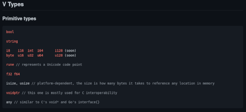

Variáveis e tipos de dados em linguagem V
Dando uma passada pelas variáveis e tipos de dados de dados da linguagem V

https://github.com/vlang/v/blob/master/doc/docs.md#v-types
Já temos um primeiro programa em V e como fazer testes e experimentos, agora vamos começar a esmiuçar a linguagem.
Estaticamente tipada e imutável
V é estaticamente tipada, ou seja, uma variável deve ter um tipo declarado e isso não mudará, além disso, imutável. Quando for necessário que uma variável tenha seu valor alterado, deve-se declarar essa intenção com o modificador mut:
mut a := 10
Ponto importante: em V, variáveis sempre tem um valor inicial explícito.
Além disso, como se percebe acima, V é capaz de inferir o tipo das variáveis na declaração. Nesse caso, int: um tipo de 32 bits com sinal, que é o tipo padrão para inteiros. Para ponto flutuante o tipo padrão é f64.
Outro ponto a perceber é que := é um operador de declaração e inicialização. Para atribuição apenas, depois de declarada a variável, usa-se =. Para comparação de igualdade, ==.
Testemos no interpretador (ver o texto anterior).
Aqui a variável a é imutável:
>>> a := 1
>>> a = a + 1
error: `a` is immutable, declare it with `mut` to make it mutable
6 |
7 | a := 1
8 | a = a + 1
| ^
E aqui b é mutável:
>>> mut b := 2
>>> b = b + 1
>>> b
3
Tipos inteiros
Os tipos inteiros com sinal são:
- i8
- i16
- int
- i64
e sem sinal:
- byte
- u16
- u32
- u64
E, planejados, teremos:
- i128
- u128
Para forçar um tipo específico na declaração, pode-se fazer dessa maneira:
c := i16(10)
Em V o tipo int sempre será um inteiro com sinal de 32 bits, independente da plataforma utilizada.
Para facilitar a leitura, pode-se adicionar o caracter _ entre qualquer dígito de um número, como, por exemplo:
>>> d := 1_000_000
>>> d
1000000
Os números não precisam ser informados em decimal apenas, também é possível explicitá-los em binário (prefixo 0b), octal (prefixo 0o), e hexadecimal (prefixo 0x):
>>> mut e := 0x010111
>>> e
65809
>>> e = 0o724
>>> e
468
>>> e = 0xff
>>> 255
Ponto flutuante
Como anteriormente dito, o tipo padrão para um número em ponto flutuante é o f64:
f := 10.3
Ou, se necessário, forçando o tipo:
g := f32(11.4)
Sempre lembrando que, caso necessário, uma variável seja mutável, só adicionar o modificador mut:
mut h := 9.81
Lógico
Há o tipo para operações lógicas, bool, que pode ter os valores true ou false:
>>> mut i := false
>>> i = !i
>>> i
true
Runas
Sempre tenho que dar um jeito de citar o livro a seguir, então aqui vai: para os que, como eu, sempre tem que recapitular sobre Unicode, UTF-8 e runas, recomendo a breve e clara explicação dada na já clássica obra A linguagem de Programação GO de Donovan & Kerhighan, aqui no Brasil publicada pela Novatec, pp. 104-8.
Feito isso (eu fiz isso quando, novamente, deparei-me com o assunto), vamos ao tipo rune em V.
Pode-se digitar o código, especificando-se tipo:
>>> j := rune(0x1F408)
>>> j
🐈
Ou então, passar a runa explicitamente, usando-se aspas invertidas, como em:
k := `🦛`
Em V, o tipo rune sempre será um alias para u32.
Strings
A linguagem V reconhece a declaração de variáveis do tipo string pelo uso aspas simples ou duplas, como em:
>>> l := 'éle'
>>> m := "ême"
>>> l
éle
>>> m
ême
Fato importante, é que uma string é um array de bytes. Portante, se tivermos um emoji (runa) no meio, serão quatro bytes, ou fazendo as contas, três bytes a mais, por exemplo:
>>> n := 'prato de 🍝'
>>> n.len
13
>>> arr := n.bytes()
>>> arr.len
13
>>> n_runes := n.runes()
>>> n_runes.len
10
Como dito, são usados 13 bytes, para 10 runas ou, apedrejem-me, caracteres.
Elementos de uma string podem ser facilmente acessados via slices:
>>> o := 'paralelepípedo'
>>> o[0..4]
para
>>> o[0]
112
Opa, e esse 112 aí? Lembremos que uma string em V é um array de bytes, portanto de valores inteiros. Para saber qual o "caractere" da posição 0, pode-se fazer:
>>> o[0].ascii_str()
p
Mas cuidado! Como mostrado anteriormente, pode-se ter uma runa no meio do caminho.
Outros tipos
Temos ainda outros tipos para operações mais complexas, como interface com bibliotecas C:
voidptr
E tipos dependentes de plataforma, que comportam a quantidade de bytes necessárias para a referenciar uma alocação de memória:
isizeusize
e tratamento em interfaces:
any
Planning
O plano agora é passar para listas e mapas e ir aprofundando cada tipo quando começarmos com a estrutura dos programas em V.